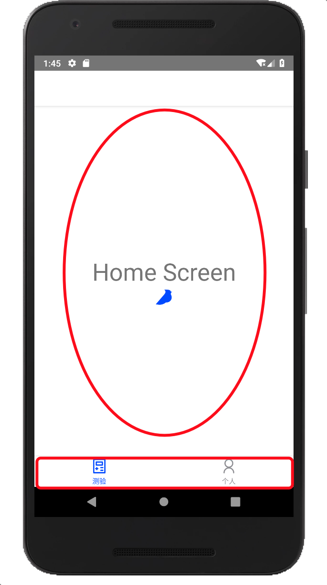

引言
继上期填坑后，笔者继续推进安卓app的开发，web上都有导航路由的功能，app要实现这个，需要模拟类似web导航的特性，目前有一个静态路由的库比较好，叫react-navigation，于是笔者开启了第二段填坑之旅。
关于要实现的路由形式
在准备阶段，我们大多数都会想尽可能的覆盖很多情况，所以笔者也是，关于路由的构成，首先有鉴权，然后有底部导航，接着每层导航对应的页面组件有内页，同时内页不会有底部导航。这是笔者目前的一个形式。
React Navigation简介
就像引言提到的这是在app中模拟的一个导航历史功能的库。浏览器的导航历史维持在一个堆栈中，每次的后退就是出栈，前进就是进栈，栈顶就是当前显示的页面。React Navigation除了提供了这些基础的功能以外，还提供了手势和动画的效果。
如何实现这种路由形式
首先React Native和web中的单页应用(Vue SPA和React SPA等)有些相似，都会有一个根视图，然后向下包含内容。比如在Vue中的
1 | new Vue({ |
这里的根就是id为app的节点。
而在React Native中也有类似的行为。
所以第一件事情就是确定这个根视图。根据react-navigation官方推荐的鉴权是使用createSwitchNavigator。由于用户进来第一件事情对开发者来说，笔者认为是鉴权，也就是确定用户是否有权限进入一些页面，同时确定用户会进哪里，所以笔者将该组件作为app的根视图。
createSwitchNavigator是什么？
下面引用官方的一段介绍：
The purpose of SwitchNavigator is to only ever show one screen at a time. By default, it does not handle back actions and it resets routes to their default state when you switch away.
笔者翻译：SwitchNavigator的目的在于在同一时间下仅显示一个页面。它的默认行为：
- 不处理返回动作，可以理解为点不了返回，无需担心还会返回到了之前的页面
- 其正在显示的页面会重置为其最初的设置，也就是重新加载了对应的页面，会重头初始化
SwitchNavigator如其名称一样，是在多个视图之间切换（switch），那么我们的根视图下面就会有子视图的显示切换，这些切换的视图如何定义呢？
定义根视图的子切换视图
talk is cheap，show me the code.好，那么就上代码。
/ 指代项目根目录，本项目由react-native-cli搭建
1 | /** |
1 | /** |
在AppNavigator.js中可以看到createSwitchNavigator中有两个参数，第二个参数里面的initialRouteName是指默认显示的视图(已切换上的视图)，第一个参数里面配置的是可供切换的视图，AuthPage和Pages是指的切换的视图的名字，后面跟的值是实际的Navigator对象或者Component，说人话就是实际的视图对象，目前笔者用到的视图对象是上述提到的两种，Navigator对象是createStackNavigator和createBottomTabNavigator等创建出来的，而Compnenent则是指React创建的视图组件。当然，现在这段有点奇怪，因为Auth和PageStack都还没创建和引入，它们在省略的代码里，所以莫慌，我们接下来，慢慢实现省略的代码。
Auth Component
下面笔者将会定义上文提到Auth，它是一个React Component，由本文仅介绍路由的实现形式，具体鉴权代码是没有的。但是鉴权的逻辑会放在这个组件里。
1 | /** |
这就是Auth的一个静态的壳，下面笔者在/routes/AppNavigator.js中引入该组件
1 | /** |
PageStack Navigator
上文中引入了Auth组件，笔者的路由又进了一步。那么现在来看下这个PageStack怎么做。还记得最初想的路由形式吗？
有鉴权和底部导航还有内页。这里AuthPage就是鉴权，所以逻辑可以梳理一下，首先用户进来会显示initialRouteName提供的AuthPage视图，即/views/Auth.js组件展示的内容；接着通过Auth内的判断是否有后端的token后，如果有token，会跳转到Pages视图，显示PageStack的内容，如果没有token，那么我们可以再加一个视图，跳转过去。但是目前笔者准备暂时将其停留在原地。需要注意的是，跳转的代码和判断的逻辑还木有加上，笔者需要先完成现在路由的构建。当我们进入PageStack后，底部导航就需要显示出来，然后显示对应的页面，并备好内页(即当前导航的页面的深层页面)。下面笔者来添加点代码：
1 | /** |
上述代码注明Component的都是指和Auth类似的React组件，它们的定义可以仿照Auth的定义来实现，只是没有了鉴权逻辑。同时这里的两个Component指的就是上文中的内页。
createStackNavigator
上面的代码用到了一个方法叫createStackNavigator，这个方法即创建页面路由栈的方法，第一个参数是包含的路由，第二参数里面的initialRouteName指定这个Navigator视图激活后的默认显示的Navigator或者Component(激活是指当前视图显示的是该Navigator)
BottomNavigator
下面我们来定义底部导航，在前端里有个专业术语叫tabBar，指的就是这个。这个是一个Navigator对象，通过createBottomTabNavigator方法来创建
1 | /** |
上述代码中的Component跟PageStack Navigator提到的Component注释是同一个意思。
createBottomTabNavigator
这个方法用来创建一个底部导航，显示效果如下图：

(用长方形圈起来的部分是tabbar，用椭圆圈起来的部分是tabbar激活的部分承载的视图)
createBottomTabNavigator有两个参数，第一个参数是配置视图有多少个，即承载的视图和下方的tabbar文字和图标，第二个参数时是对第一个参数里的视图，配置公共的属性，比如这里用到的activeTintColor是指的tabbar激活(即被选中)时的颜色，这里的#004aff是蓝色，Platform.OS是用来是区分是iOS平台还是安卓平台，笔者展示的图片是安卓平台，所以读者看到的激活状态是蓝色的。
结语
到这里，其实整个路由的形式已经做好了，接下来就是对它进行添砖加瓦，或者进行更进一步的扩展，目前笔者的需求暂时只会用到这些，后期会根据新的需求做调整。
最后，感谢大家的观看，欢迎使用全栈工坊微信小程序并关注java技术大本营微信公众号。
转载请注明来源，欢迎对文章中的引用来源进行考证，欢迎指出任何有错误或不够清晰的表达。可以在下面评论区评论，也可以邮件至 jaytp@qq.com